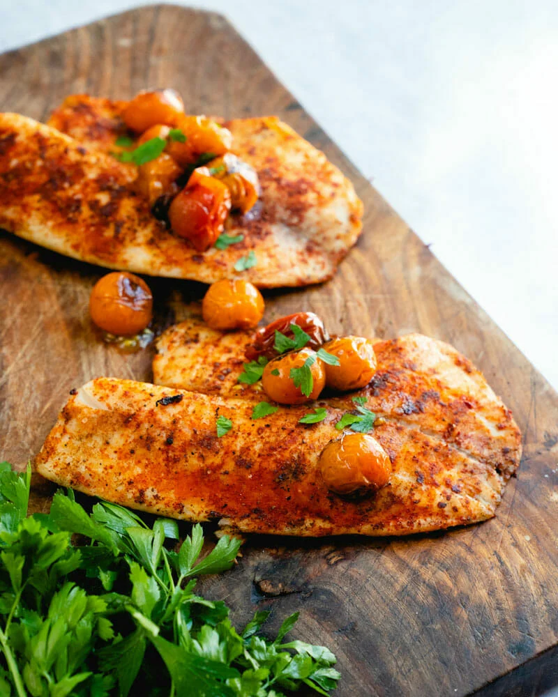
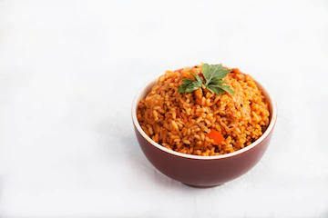

Grilled Tilapia
Chef's Fish Recipe
Grilled Tilapia
Ingredients:
- Tilapia fillets
- Olive oil
- Salt
- Spices: Smoked paprika
- garlic powder
- onion powder
- celery seed See full Recipe...

Chef's Chicken Recipe
Chicken & Chips
Ingredients:
- 1/2 chicken (pieces)
- 1 large tomato
- 1 onion
- 5 large potatoes
- 1/2 tsp crushed garlic
- 2 cups cooking oil
- to taste salt See full Recipe...

Ghana Jollof
Chef's Special Recipe
Ghana Jollof
Ingredients:
- 750 to 800g (1 1/3 lbs) lamb (or beef)
- ½ an onion
- 1scotch bonnet pepper (habanero is a good substitute)*
- 1 bouillon cube** See full Recipe...